1 Understanding diffusion maps
1.1 What a diffusion map does
A diffusion map gives each observation a small set of new coordinates, usually named DC1, DC2, DC3, and so on. Observations receive similar coordinates when they are connected through many short steps in the original data.
The method is useful when the data follow a continuous shape that is hard to see in the measured variables. In a developmental process, many genes may change even when the main underlying changes are progression and a choice between branches.
A diffusion map is a dimensionality reduction method. It produces coordinates. It does not by itself:
- assign observations to clusters
- determine their order in time
- infer a trajectory or its direction
- identify causes
Those analyses can use diffusion coordinates as input, but they are separate steps.
1.2 Simulated example
The example contains 900 simulated observations and 30 measured variables related to a branching process. The simulation also records progression and branch membership. These two variables are used only to evaluate the results. The practice chapter includes ten additional noise variables.
Figure 1.1 shows the problem. The left panel shows the simple structure used to generate the data. The right panel shows two of the measured variables. The structure is not visible in that pair of measurements.
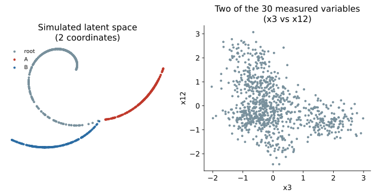
The observations occupy a simple, curved shape inside a space with many dimensions. Such a shape is often called a manifold. Even with many measured variables, the data may have only a few main directions of change.
1.3 Local and global distance
PCA describes the data using straight axes fitted across the whole dataset. That works well when the data structure is roughly flat. It is less suitable when the structure bends or branches.
A diffusion map starts with local distances instead. Nearby observations are treated as similar under the chosen distance measure. Large distances receive less direct influence.
In Figure 1.2, A and B lie on a curved path. Their straight line distance cuts across an empty part of the space. Moving along the populated path gives a better account of how they are related. Diffusion maps estimate this type of relationship by joining many reliable local comparisons.
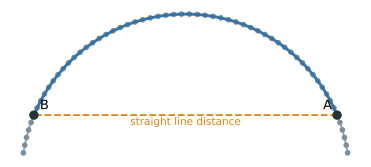
1.4 Step 1: build a neighborhood graph
For each observation, the method finds nearby observations and connects them in a graph. Similar neighbors receive stronger connections. Distant observations are not connected directly.
Figure 1.3 shows this graph for the simulated data. The positions in the figure use the known two dimensional structure only to make the graph easy to inspect. The graph itself was calculated from all 30 measured variables.
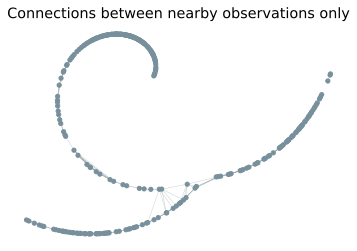
The graph changes the question from “How far apart are these two rows of the data matrix?” to “How easily can one region be reached from the other through local connections?”
1.5 Step 2: let probability move through the graph
The method next defines a random walk. From its current observation, the walk moves to a neighbor. A move to a more similar neighbor is more likely than a move to a less similar one.
Start the walk at one observation. After one step, only its immediate neighbors can be reached. After two steps, neighbors of those neighbors can also be reached. After eight steps, probability has spread farther along the graph.
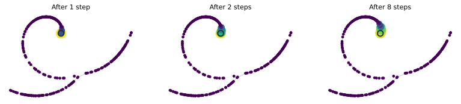
After 60 steps, a much larger part of the connected graph can be reached. The branch tips still have low probability because they are far from the starting point in terms of graph steps.
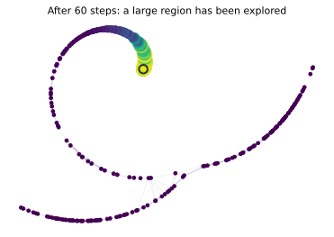
This repeated spreading is the “diffusion” in diffusion maps. It is a calculation on the neighborhood graph, not movement observed in the original data.
1.6 Why use a random walk instead of a shortest path?
A shortest path uses only one route between two observations. A random walk uses all available routes and is therefore sensitive to how well two regions are connected.
The left side of Figure 1.6 shows two observations in a dense part of the graph. Several short routes connect their neighborhoods. The right side shows observations on opposite sides of a sparsely connected region. There are fewer routes between them.
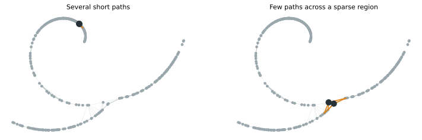
The two pairs could have similar straight line distances and still behave differently in the random walk. Probability moves readily between the strongly connected neighborhoods and more slowly across the sparse connection. Diffusion maps therefore reduce the influence of a single accidental edge.
1.7 Step 3: compare starting observations
Run the walk for the same number of steps from every observation. Starting at observation \(i\) produces a complete endpoint distribution, written \(P^t_{i,:}\). It contains one probability for every possible destination.
If probability starts here, where can it spread after \(t\) random walk steps, and with what probability?
“Reach” does not mean only that a destination can or cannot be reached. The full set of probabilities matters. Two starting observations are close in diffusion geometry when their endpoint distributions are similar. If walks started at two different observations spread to nearly the same destinations with nearly the same probabilities, those observations occupy similar positions in the graph’s connectivity structure.
Figure 1.7 compares these distributions after eight steps. P and a nearby observation give similar distributions. P and Q, which lie in different parts of the graph, give different distributions.
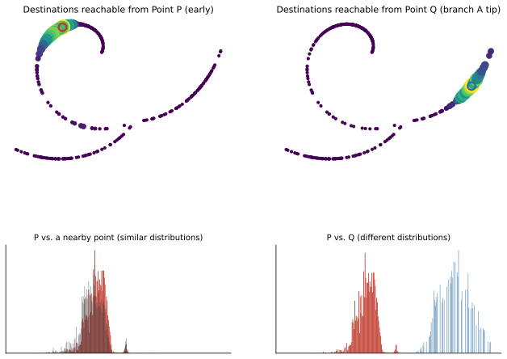
The numerical difference between two endpoint distributions is called diffusion distance:
- small diffusion distance means the walks spread through the graph in similar ways
- large diffusion distance means they spread in different ways
This comparison uses the neighborhoods and paths around both observations, not just their direct distance or a single edge. The sequence is
\[ \text{start from each observation} \longrightarrow \text{let probability diffuse} \longrightarrow \text{compare where it spreads} \longrightarrow \text{represent the comparisons with diffusion coordinates}. \]
1.8 Step 4: replace long distributions with coordinates
With \(n\) observations, every starting observation produces a profile containing \(n\) probabilities. Comparing these high dimensional profiles directly becomes cumbersome for a large dataset.
The diffusion has already occurred through the repeated random walk steps. The eigendecomposition does not create it.
The eigendecomposition provides a compact coordinate system that summarizes differences between the diffusion profiles.
A diffusion map usually returns coordinates named DC1, DC2, DC3, and so on. Using the full nontrivial eigenbasis reproduces diffusion distance exactly under this construction. Keeping only the leading components gives a lower dimensional approximation. The mathematics chapter derives this result.
1.9 The number of steps controls the scale
The number of random walk steps is written \(t\) and called diffusion time. Despite the name, it is not clock time, developmental time, or a measured property of the observations.
- With small \(t\), the endpoint distribution covers a small neighborhood. The result retains local detail and can also retain local noise.
- With intermediate \(t\), the walk covers a wider region. Small irregularities matter less, while larger structure remains.
- With very large \(t\), the walk eventually loses information about where it started. Different starting observations then become hard to distinguish.
There is therefore no rule that larger \(t\) is better. The practice chapter shows how to inspect its effect. The mathematics chapter explains how \(t\) changes the relative contribution of the diffusion components.
1.9.1 When a fixed diffusion time is used
Many software packages return the diffusion eigenvectors \(\psi_k\) and eigenvalues \(\lambda_k\) without asking the user to choose \(t\). Those quantities are enough to construct coordinates at any diffusion time:
\[ \mathrm{DC}_k^{(t)} = \lambda_k^t\psi_k. \]
Diffusion time connects the repeated walk \(P^t\) to diffusion distance. It also explains the persistence of connectivity patterns and why components with smaller eigenvalues lose influence faster.
A fixed \(t>1\) is useful when the analysis needs geometry at a chosen propagation scale. A moderate value can reduce very local differences while retaining broader structure. Because the components are reweighted by different amounts, Euclidean distances in the weighted coordinates also change. This can affect clustering, neighbor searches, and other analyses that use those distances.
Many workflows do not select a fixed \(t\). They work directly with the returned components and eigenvalues, or use a method such as Diffusion Pseudotime that draws on diffusion information across scales. A very large \(t\) is not better. On a connected graph that mixes, all nontrivial patterns eventually decay and the walk forgets its starting point.
Diffusion time is essential for understanding the method, but choosing a fixed \(t>1\) is not a mandatory step in every practical diffusion map workflow.
1.10 What the diffusion components represent
Each component describes a different pattern of connectivity across the observations. Components are not original measured variables, and they are not PCA directions chosen to maximize variance.
1.10.1 Smoothness means similarity between graph neighbors
Start with a graph that is just a line of seven observations, A through G, each connected only to its immediate neighbors. Figure 1.8 (left) shows one possible component on this graph: a value assigned to each observation, changing gradually from -1 at A to 1 at G.
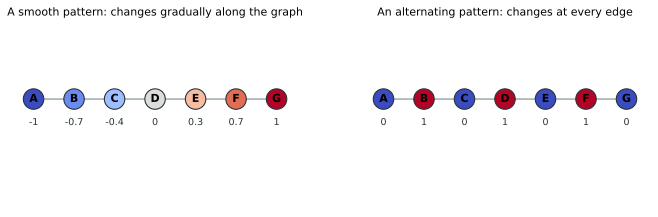
This component describes a broad distinction between the two ends of the graph. Connected observations receive similar values, and the large difference appears only when distant parts of the graph are compared. This is what it means for a component to be smooth over the graph.
“Smooth” does not refer to chronological or biological time. It means that observations connected by strong graph edges tend to have similar component values.
A branching graph can contain more than one broad pattern. Figure 1.9 shows the simplest case: a shared trunk leading to a junction, then two separate branches.
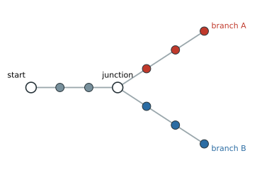
One component might distinguish the start from both terminal regions. Another might assign similar values along the shared trunk but opposite values to branches A and B. The same graph can therefore support components describing progression, branch separation, weakly connected regions, or smaller local features. DC1 does not always represent progression, and DC2 does not always represent branching. Their meanings depend on the graph.
Figure 1.10 illustrates three possible patterns on the simulated branching layout. These are deliberately simplified examples, not components estimated from the data. The displayed persistence values are also illustrative.
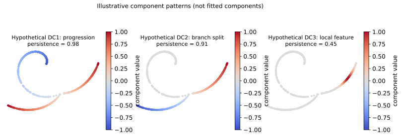
In this illustration, DC1 with value 0.98 is the most slowly forgotten nontrivial pattern. DC2 with value 0.91 describes another persistent distinction, but it disappears faster than DC1. DC3 with value 0.45 describes a more local distinction that is erased more quickly. These numbers do not rank biological importance. A later component can still represent meaningful structure. Later does not mean noise.
1.10.2 Component order
Each random walk step mixes information between neighboring observations. Some connectivity distinctions survive this mixing for many steps. Others are removed quickly.
Consider two dense regions joined by a weak connection, shown schematically in Figure 1.11.
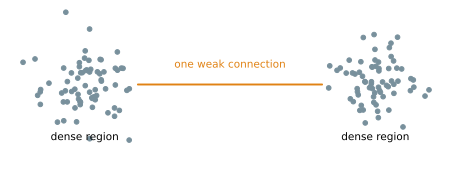
A walk starting in the left region tends to remain there for several steps, and the same is true on the right. It takes many steps for the walk to forget which region it started in.
A pattern is persistent when the random walk needs many steps to forget the distinction.
Now consider the alternating pattern shown on the right side of Figure 1.8. Its value changes between 0 and 1 at every edge.
Mixing each value with its neighbors quickly flattens this alternating pattern. It is a rapidly disappearing structure.
The first nontrivial diffusion components describe distinctions that the random walk forgets most slowly. Later components describe patterns that disappear more quickly and often occur at a finer scale. This ordering is not a ranking of biological importance.
1.10.3 Component values and eigenvalues
The component values show which connectivity pattern is being described. Its eigenvalue indicates how quickly the random walk erases that pattern.
For example, a component may separate two regions joined by a weak bottleneck. Observations within each strongly connected region tend to receive similar component values, while the main change occurs across the bottleneck. If the random walk rarely crosses that bottleneck, the distinction has a large eigenvalue and remains visible for many steps.
A large diffusion eigenvalue does not mean large explained variance. Unlike a PCA eigenvalue, it is not a measure of how much variance a component explains. A value close to 1 means that one diffusion step changes the component little. A smaller value means that repeated diffusion washes out the component more quickly.
The full diffusion calculation also contains a stationary component that assigns no useful separation between observations. Software may store it internally. In Scanpy, it appears as the first stored column. Diffusion map plots normally begin with the first nontrivial component, called DC1 here. The practical chapter shows how each package stores these columns.
1.10.4 Diffusion time reweights the components
Component ordering is based on what survives one step. Diffusion time \(t\) controls how many times that step is repeated. The difference between components therefore grows with \(t\).
The following values are illustrative, not estimates from the simulated data.
| Component | Persistence value | After 1 step | After 5 steps |
|---|---|---|---|
| DC1 | 0.98 | strong | still strong |
| DC2 | 0.80 | strong | much weaker |
| DC3 | 0.30 | weak | almost gone |
At small \(t\), local differences, branch differences, and broad progression may all be visible. At intermediate \(t\), many local differences have disappeared while major branches and broad progression remain. At larger \(t\), branch differences may also weaken, leaving only the broadest connectivity pattern. At extremely large \(t\), the walk eventually forgets almost all information about its starting point.
Within one component, increasing \(t\) does not change the ordering of observations. It changes the component’s scale. When several components are combined, those with smaller eigenvalues shrink faster and contribute less to multidimensional distance.
Figure 1.12 shows this on the simulated data. DC2 shrinks faster than DC1, so the map is compressed vertically as \(t\) increases. The common axis limits make that change visible.
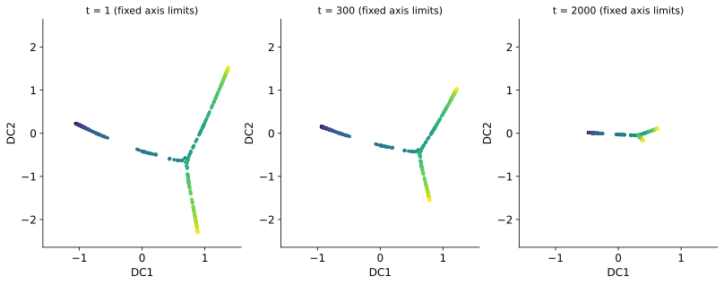
If each panel is automatically rescaled, the effect can be hidden. Figure 1.13 shows the same coordinates with separate axis limits. The shapes appear much more similar because each panel has been stretched to fill the plotting area.
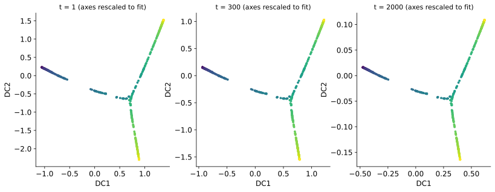
Use fixed axis limits when comparing the relative scale of components across diffusion times.
The large values of \(t\) in these two figures were chosen to make the scaling visible. They are not recommended default settings.
1.10.5 Questions to ask about a component
When interpreting DC1, DC2, or a later component, ask:
- What broad connectivity pattern does it distinguish?
- Do graph neighbors have similar component values?
- Does it follow progression, separate branches, cross a bottleneck, or describe a smaller local feature?
- How large is its eigenvalue relative to those of the following components?
- Does the pattern remain visible as diffusion time increases?
- Could it reflect batch, sampling density, or another technical factor rather than the process of interest?
The component values describe the pattern. The eigenvalue describes how quickly the random walk forgets it. Component order places the most slowly forgotten nontrivial patterns first.
1.11 Results for the simulated data
Figure 1.14 shows the first two components calculated from the 30 measured variables. DC1 closely follows known progression, while DC2 helps separate the two known branches. The method was not given progression or branch labels.
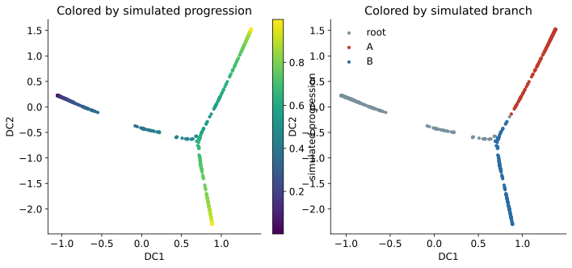
DC1’s eigenvalue is 0.9996. This says that a single diffusion step retains 99.96% of the component’s scale. It does not say that DC1 explains 99.96% of the data. In this graph, the most persistent nontrivial connectivity pattern happens to follow progression. That interpretation must be checked rather than assumed.
1.12 Coordinates are not a directed trajectory
The example has a strong relationship between DC1 and known progression, but the diffusion map does not know which end is early or late. Reversing the sign of DC1 would describe the same geometry.
A directed trajectory requires extra information, such as a chosen starting observation, known time labels, biological knowledge, or an independent directional measurement. Trajectory inference is a downstream analysis that can be performed on diffusion coordinates.
The same caution applies to branches. Separation in a diffusion map shows separation in the neighborhood graph. It does not establish that the groups are distinct biological fates. Batch effects, measurement artifacts, or graph settings can also produce separation.
1.13 When the method is useful
Diffusion maps are a reasonable choice when:
- the data appear to contain a gradual process rather than only separate groups
- the structure may be curved or branching
- distances between close observations are meaningful
- the measured space has many dimensions but is thought to contain a structure with fewer dimensions
They are less suitable when:
- no meaningful distance can be defined between observations
- batch effects or other technical differences dominate the neighborhoods
- nearest neighbors are unstable because the data are too sparse or noisy
- the main goal is a linear model with directly interpretable feature loadings
- the task is supervised prediction rather than geometric representation
A diffusion map follows the graph it is given. It cannot decide whether that graph reflects biology, a technical artifact, or poor parameter choices. Neighborhood stability and known covariates should be checked before interpreting the coordinates.
1.14 Summary
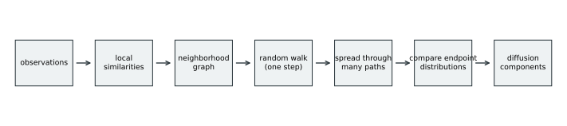
The method can be summarized in four steps:
- Connect similar observations in a neighborhood graph.
- Run a random walk for \(t\) steps from each observation.
- Compare the resulting endpoint distributions using diffusion distance.
- Represent those comparisons with a small number of diffusion components.
The next chapter implements these steps in R and Python. The mathematics chapter then derives the transition probabilities, diffusion distance, and diffusion components.